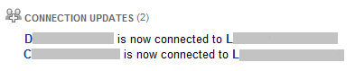
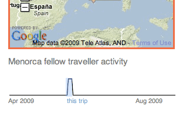

Everyone has a data shadow, it’s the cumulative size of all of the transactions that we conducted or others conduct involving us directly or indirectly.
Bruce Schneier, a brilliant man in his own right, wrote an article entitled Privacy in the Age of Persistence, which discusses all those little bits (pun intended) of ourselves that we leave around in an age where data capture and storage is so cheap it is worthwhile to just keep everything. How does this impact our daily lives and how dangerous is this?
Status Updates
Sites like Facebook and Twitter allow for people to give a status update. This is an explicit statement on your behalf about what you are doing. If you say out right, “I hate my employer” it is pretty naïve to think they will never see it. We’ve seen this perceived private data, leak into the public when serious conflicts of interest arise.
Explicit status updates tell us one thing, but what status updates do leak about you, is the frequency and the timing of your posts. When you merge this data with additional information, interesting conclusions from seemingly innocuous data begin to fall-out. Are the status updates occurring when you should be working? Was it while you were in an important meeting—were you really paying attention? Best not to post about your picnic on days when you phoned in sick.
In these cases it isn’t the message that betrays you, but the metadata that comes along with it. You can lie about the content, but everything else is out of your control!
One of the first rules of being an independent contractor, a start-up or a consultant, is to never reply to emails at 2am. Even if you are up, you can write the email, but don’t hit the send button until normal work hours. The client won’t get the message until they get into work, but if you did send it, they will see in the metadata that you replied at 2am and they will expect this every time. It isn’t the message that burned you, it is the time stamp metadata.
Watching business connections
Ah, Linkedin, for what shall we exactly use you for? Linked-In is a site to keep your resume current and to make business connections. There are a whole host of other schizophrenic issues about what the site wants to be, but those are another discussion for another day. While trying to find their niche, they are experimenting with finding experts and a better referral system, but in the process data is being leaked out. Not any one bit of information leaked is a privacy violation, but in aggregate interesting data can be gleaned!
One day, I logged into my account and it showed me a list of my contact and whom they have recently connected too. The idea being that I too might know these new people and strengthen my network. The concept is important, because it gets around the blank page syndrome. If there is a blank page staring you in the face, it is really hard to get started, so with a few suggestions it is much easier to jump in and start running. The downside is that you are exposing relationships and if you have enough pieces of the puzzle you can stand back and see the full picture.
Recently, I had a friend who works in one of the big Icelandic banks. This wouldn’t be interesting except that recently the government took over all three of the major institutions after they collapsed under the weight of their foreign loans. When I logged into my Linked-In account, it showed that they had recently ‘friended’ an interesting 3rd party whom I did not know. Now, that’s the point of Linked-in, make new business connections. The more interesting part comes when a second friend who works in a smaller consulting firm also ‘friended’ the same 3rd party person on the same day. Now, nothing can be proven, but the evidence isn’t good. Knowing that these three groups, if not more, all had a meeting that day, and knowing what each of the three groups specialized in, it wasn’t hard to see what the bank was planning to happen in the very near future.
You would certainly hope that you trust the people whom you have shared your information with in your social network, but sometimes conflicts of interest are bound to arise and others will use this information to their advantage. Each person’s action didn’t say anything, but sometimes the innocent actions of your friends expose your intentions.
Your interests expose you
With the inception of bookmarking sites, it was easy for others to follow what you are interested in. Sites like del.icio.us and the now defunct ma.gnolia.com were great resources to store bookmarks online. The downside is that they are usually public. The meant that every time someone showed me their really cool new project that I wasn’t suppose to tell anyone about, I couldn’t bookmark it, otherwise the world would know. This isn’t an issue as much as it is a hassle.
What online bookmarks do is expose your interests. In hind-sight it is pretty easy to see how this works. Several friends work at start-up or small nimble companies, some even have their own businesses with expensive venture capital backed investments. I watch their bookmarks because they are interesting people, doing interesting things. Watching their life-stream helps me to stay current. The problem is when they start bookmarking sites which they will come back to as a reference. They are subtly exposing the direction they are taking their products. Now, imagine these aren’t your friends, but your competition, business partner, or even someone interested in buying the company or product.
Beyond businesses, in your personal life, if you begin to bookmark sites such as; “How to excel in a Job Interview” or “Ten top tips to improve your CV” then your employer knows something is up. I’ve been told of instances where co-workers have been given the time off to go to conferences to try to promote and sell company products, but if you watch their bookmarks it is all about the people met and interesting side projects. It becomes painfully obvious how they are working less for the company and more for themselves.
Location, Location, Location
There are several travel related sites out there, Dopplr and TripIt are the two big ones. The main thrust of these sites to geographically let others find out when and where you are traveling. I use these services and love the functionality they expose to me. When I attend large conferences, I can easily peek to see if other friends are in the same town at the same time. If so, they are most likely also attending the conference and if not at the conference, then they are still in town hopefully available to meet-up. The same applies when planning my trips, I can quickly see if other friends are arriving early or staying later in each city. This allows me to adjust my travel plans to sync-up with theirs. On top of all of this, it an easy way to also collaborate with friends who are not traveling. They, along with work colleagues, know when I am at home, and when I am on the road.
 The problem with all this data sharing is that you are sharing the data. There have been instances of top secret events being hosted around the globe that are exclusive, invite only. They are announced to the public only days before and those who can attend are the sorts that are willing and capable of dropping everything to make it. The problem of data leakage is that you can watch people “in the know” or event organizers. They are planning their trips and using these social tools to schedule blocks of time, both to remind themselves and to let others know they are unavailable, but if you can put the pieces together, it is easy to see the bigger picture.
Do we need a fictitious place for people report their travels too? This allows us to block off the time, without actually reporting where we are attending. Some folks tell their spouses they are going to the doctors, when in fact they are spending time at Bohemian Grove, a super exclusive summer camp. What would the 21st digital equivalent be? Another Shibboleth to which people could hide their true intentions in plain sight, possibly the aptly named Shibboleth, Missouri. Those “in the know” would understand this is not the true destination, while others would assume this innocuous location is just an insignificant trip. The up-side is that you are now only leaking the dates, not location, but how many top secret events are happening at the same time? Simply tracking the data publicly means you are leaking information not only about yourself, but also lots of metadata.
What about in the physical world?
Your data shadow extends into the real-world just as strongly as in the virtual. Customer loyalty cards, travel/metro cards, parking meter receipts, ATMs, credit card purchases, phone calls received and triangulation data, SMS sent, CCTV cameras, congestion zone cameras, fingerprints, the heat signature of your “recently” turned off automobile, unique bluetooth & WiFi ids attempting to connect to passing by waypoints and many more, all leak data about you from the real world. When everything is aggregated it becomes a clearer picture of your interactions and intentions.
In the years to come, I’m sure there will be regulations attempting to keep more and more data under the guise of security and I would bet that the people making the laws never think about about how it effect themselves. In the late 01980s, Robert Bork was being presented before the US Congress to be approved for a Supreme Court Seat. His video rental history was leaked to Congress in an attempt at a smear campaign. For better or worse, Robert Bork had a pretty boring video rental history. What it did do, was make all of Congress aware of how easy it was to get at other people’s data shadow. Fearing for their own rental history, they passed the Video Privacy Protection Act in 01988. While this doesn’t prevent the collecting and/or publishing of the data, it criminalizes it with a fine. The bigger issue is that it was enacted as a reactive measure rather than a preventative one. Systems that bolt-on security or privacy after the fact are usually less secure or private than those who are built with these principles at the core.
Cory Doctorow wrote an article entitled Personal data is as hot as nuclear waste, which he argues for better data privacy and protection. It isn’t clear what all this means for our future, but it will move more into the forefront as it becomes easier to get access sensitive information stored on computer systems. For instance, several of the 02008 US presidential candidates’ passport information were breached improperly by curious employees, the response was the standard round of firings and disciplinary matters rather than actually addressing the underlying data collection, storage and access problems.
You can’t stop your shadow from growing darker and larger, but simply being aware of it is important. Understanding how it works and that everything is a trade-off, a few penny savings at the store might not be worth all the hassel at a latter date, publicizing your most recent contacts might out their intentions or bookmarking that site to read later could spill the beans about your next project.